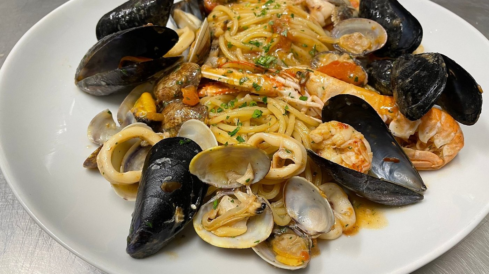
Alassio · via Mazzini 67
Cucina di mare e casereccia nel centro di Alassio, a pranzo e a cena. Sala ampia e accogliente, tavoli fuori sotto i portici.
Pranzo 12–15, cena 19–22
Sei giorni su sette · martedì chiuso
4,6 su Google
Tavoli all'aperto
Cani ammessi
Un assaggio
In tavola
Qualche piatto dell'osteria, come arriva in tavola. Passano da soli: tocca per fermarli.
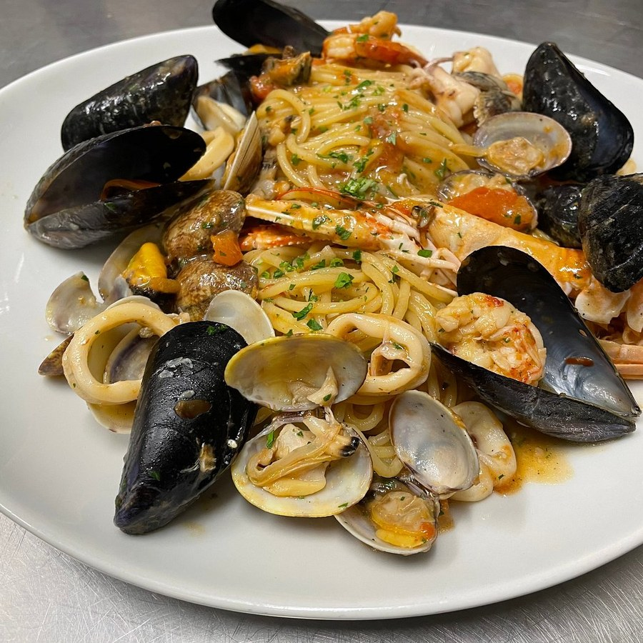
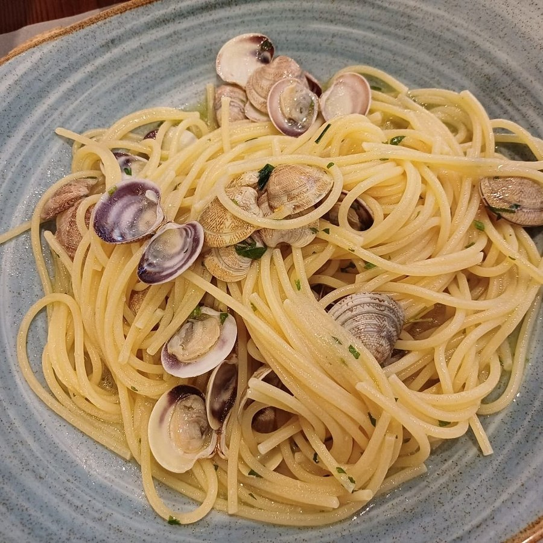
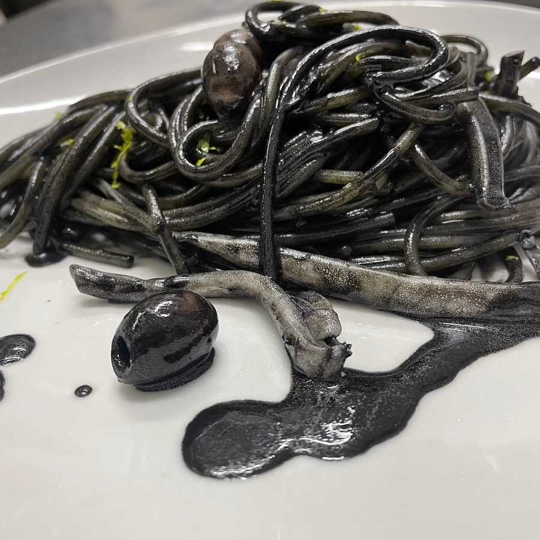
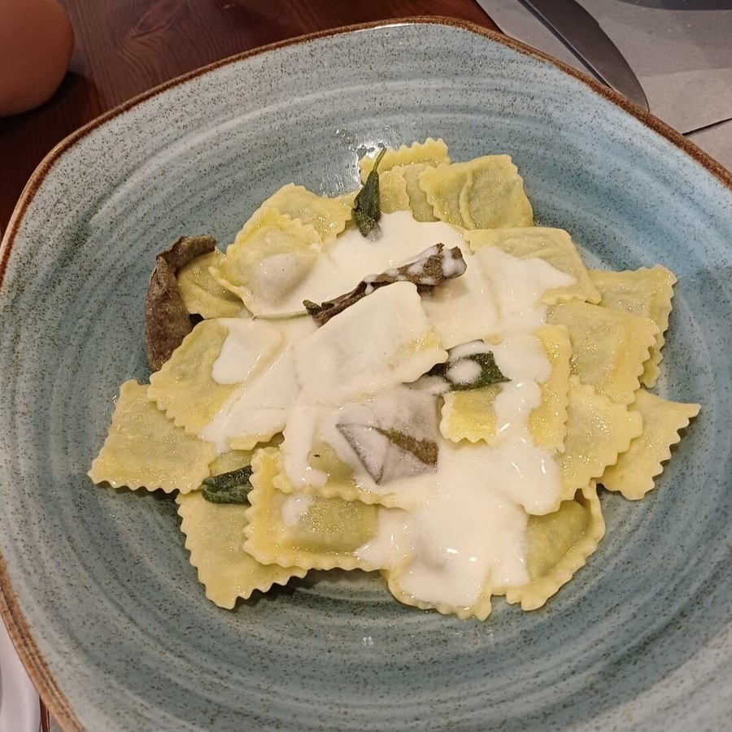
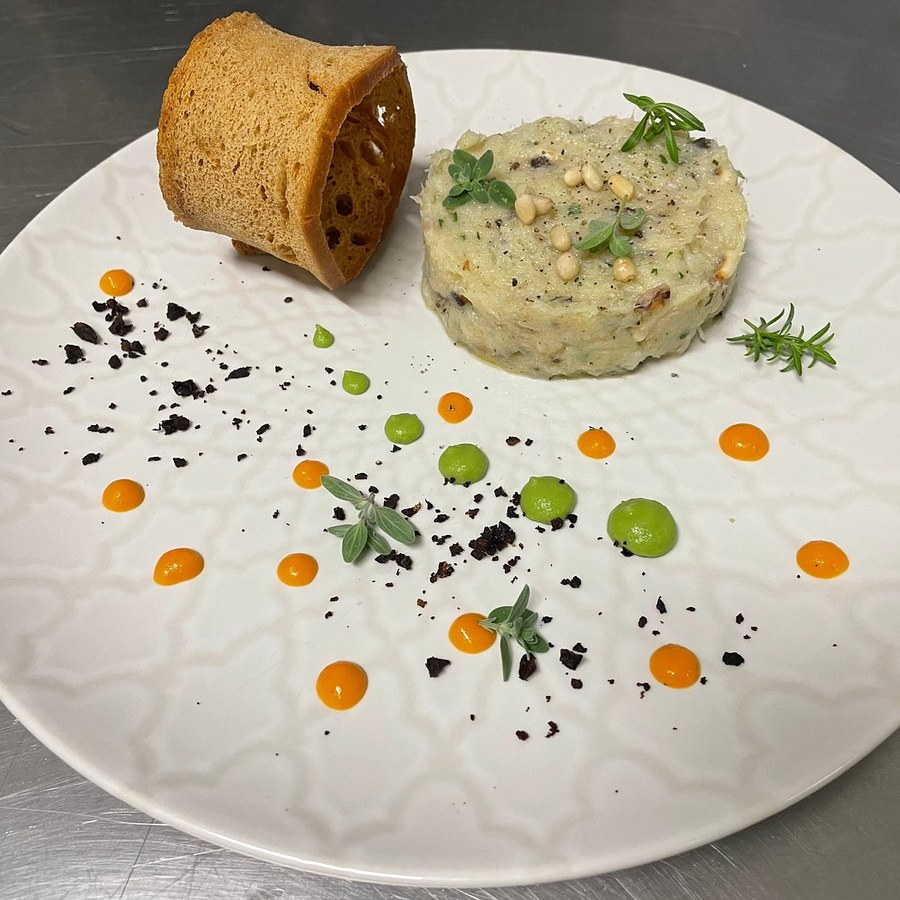
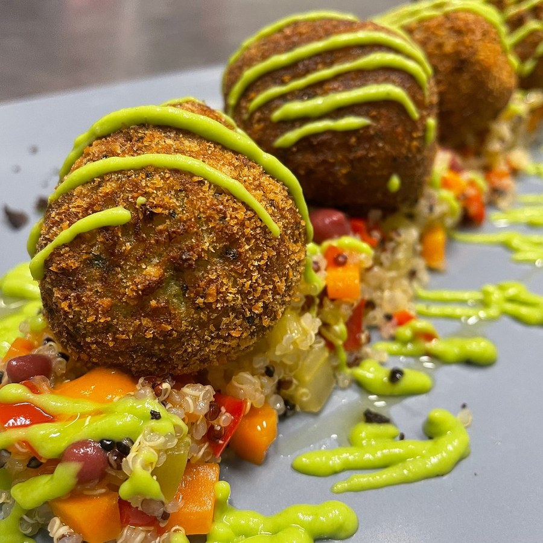
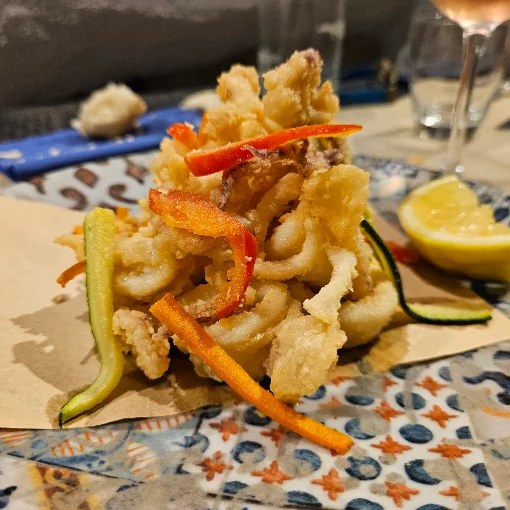
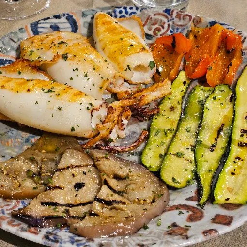
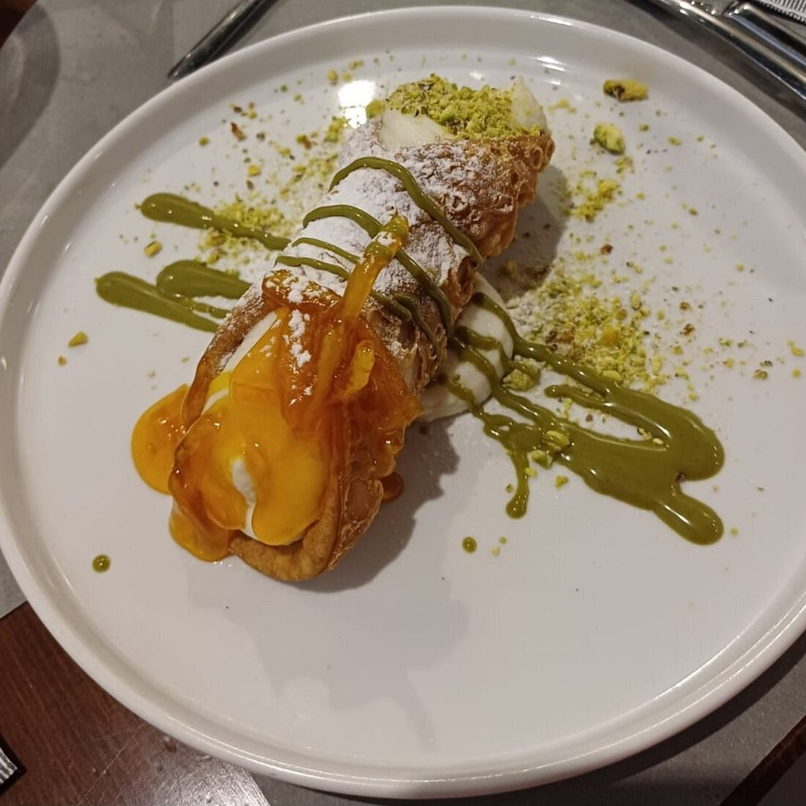
Dove si mangia
La sala, i quadri, i vini
Pareti chiare, travi a vista e quadri alle pareti. Fuori, i tavoli sotto i portici di via Mazzini.
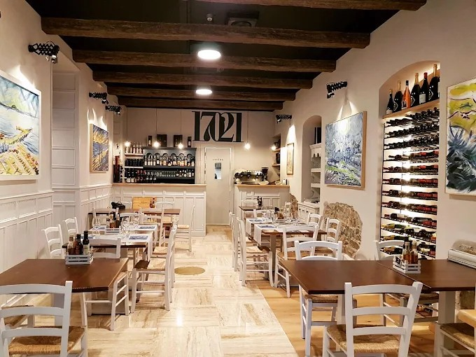
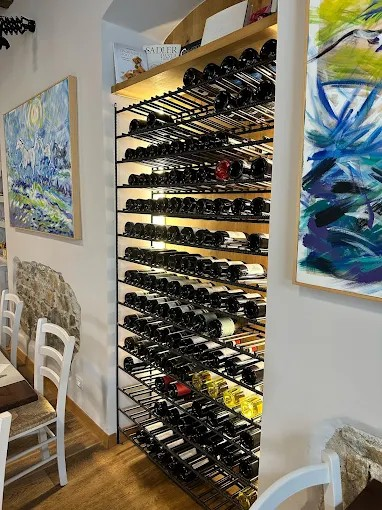
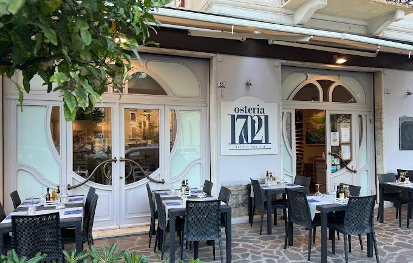
Tre esempi, per far vedere come si vedranno le recensioni vere.
★★★★★
Spaghetti allo scoglio con il pesce che si sente, e un fritto asciutto. Ci siamo seduti fuori e siamo rimasti fino a tardi.Esempio
★★★★★
Siamo entrati a pranzo senza prenotare e ci hanno fatto posto. Sala bella, quadri dappertutto, conto onesto.Esempio
★★★★★
Siamo arrivati con il cane e i bambini: seggiolone pronto e una ciotola d'acqua portata subito.Esempio
Dove siamo
Vieni a trovarci
Siamo in via Giuseppe Mazzini 67, nel centro di Alassio. Il tavolo si prenota al telefono: rispondiamo noi.
| Lunedì | 12–15 · 19–22 |
| Martedì | Chiuso |
| Mercoledì | 12–15 · 19–22 |
| Giovedì | 12–15 · 19–22 |
| Venerdì | 12–15 · 19–22 |
| Sabato | 12–15 · 19–22 |
| Domenica | 12–15 · 19–22 |
IndirizzoVia Giuseppe Mazzini 67
17021 Alassio (SV)
17021 Alassio (SV)
Telefono0182 596458
Instagram@osteria17021
Si prenotaAl telefono, allo 0182 596458, negli orari di apertura.
In sala e fuoriTavoli all'aperto, seggioloni per i bambini, cani ammessi.
Quando siamo apertiPranzo e cena sei giorni su sette, dal mercoledì al lunedì.